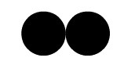

Substancia simples:
Baseia-se em duas "bolas" com as mesmas características para representar átomos do mesmo tipo.
Veja mais sobre substâncias simples em: Brasil Escola.
*click*
A duvida sobre a constituição da matéria incomoda os homens desde os primordios.
A ideia, ou os estudos do átomo, surgem na Grécia antiga, por volta de 450 a.C.,
a partir, principalmente, de Demócrito e Leucipo. No entanto, o átomo só recebe uma
"imagem" a partir da teoria atômica de Dalton.
A teoria atômica de Dalton foi fundamental para o desenvolvimento
do conhecimento atômico, pois serviu de base para que outros cientistas conhecessem
o átomo e suas características.
Como toda Teoria atômica, a de Dalton támbem se basiou em experimentos, porém
seus experimentos não revelaram todos os segredos do átomo. Com eles, Dalton concluiu que :
Baseia-se em duas "bolas" com as mesmas características para representar átomos do mesmo tipo.
Veja mais sobre substâncias simples em: Brasil Escola.
Baseia-se em três "bolas" com características diferentes para representar átomos diferentes.
Veja mais sobre substâncias compostas em: Brasil Escola.
Baseia-se na união de substancias diferentes que,como ja dito antes, tem características distintas para representar diferentes átomos.
Outras contribuições científicas de John Dalton: